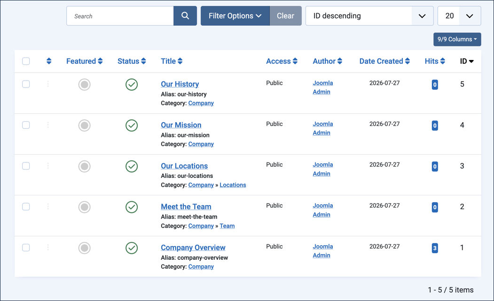
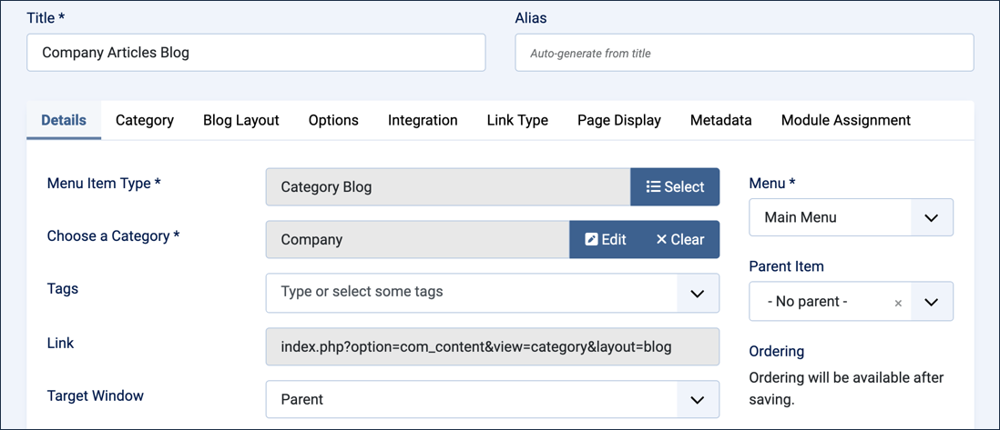
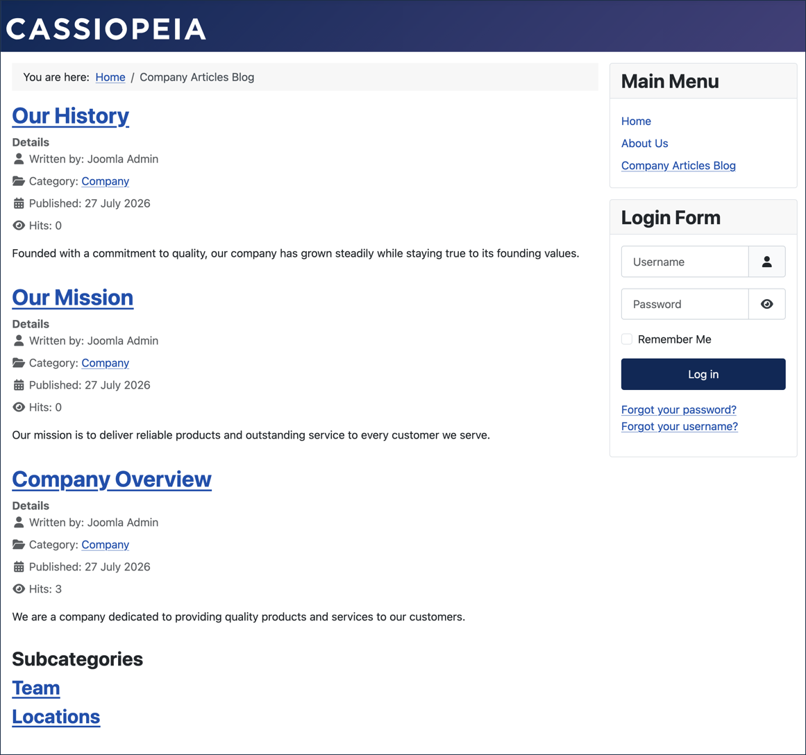
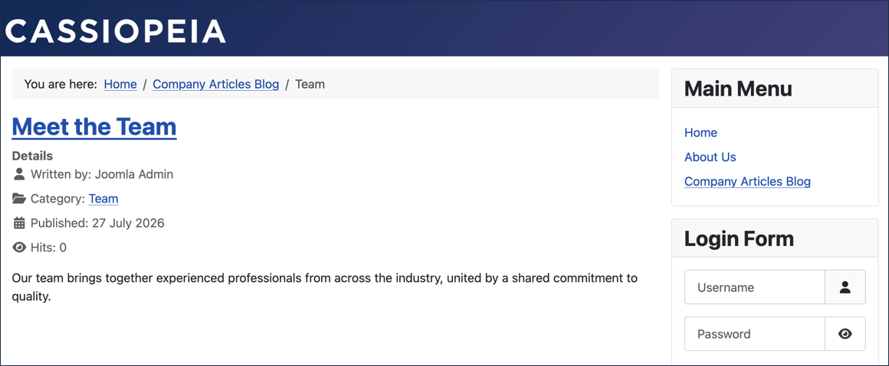
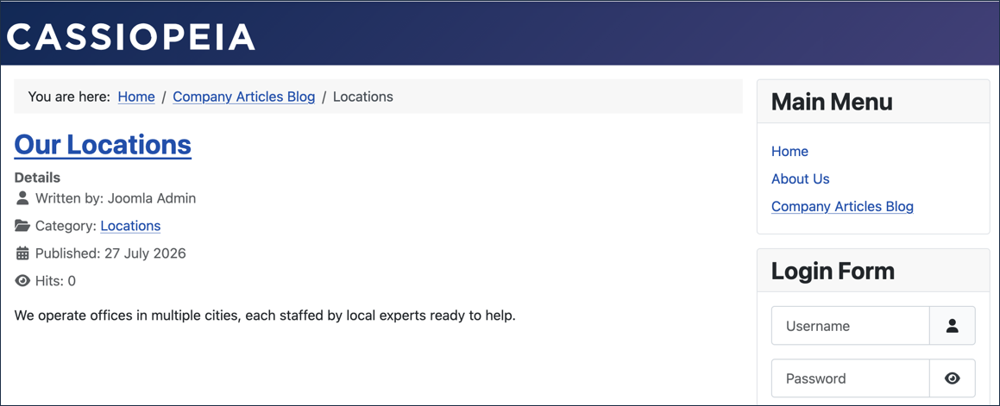
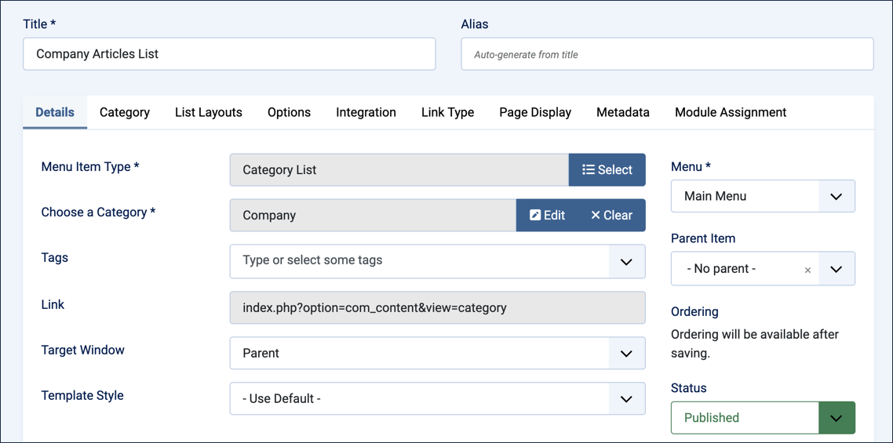
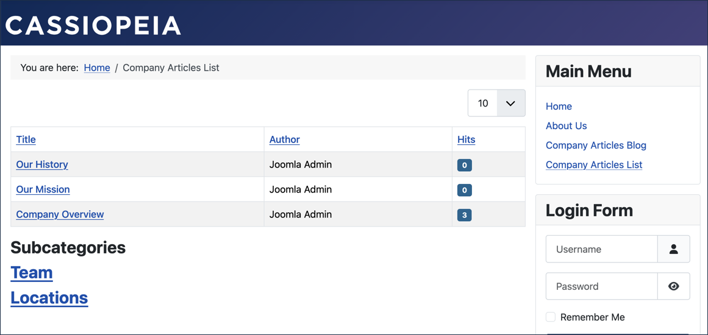

Articles grouped by category can be quickly and easily displayed on your website. This tutorial explores two types of layouts, the Category Blog Layout, and Category List layout. The Category Blog Layout presents articles in a rich layout where each article is displayed with its title, an optional image, and article details. The Category List layout displays a simple list of article titles that link to the article. This tutorial demonstrates how to create both layout types.
2.2 Creating a Category creates the Company category and assigns Company Overview to it. This tutorial's Setup adds two more articles to that category.
Setup
Add More Articles to Company
The Company category currently has one article. A blog or list layout is more convincing with a few more, so this part of the setup moves quickly — each article just needs a title, category, and a bit of text.
Log in to Joomla backend and navigate to the Home Dashboard.
In the Administrator Menu, click Content > Articles.
Click New. Result: A new-article form appears.
Title:Our Mission
Category:Company
Article Text:Our mission is to deliver reliable products and outstanding service to every customer we serve.
Click Save & New.
Title:Our History
Category:Company
Article Text:Founded with a commitment to quality, our company has grown steadily while staying true to its founding values.
Click Save & Close. Result: The Company category now has three articles — Company Overview, Our Mission, and Our History.

The articles list, showing all five articles created across 2.2 and this Setup, with their categories
Steps
Create a Category Blog Layout
The Category Blog menu item creates a page that displays a list of articles in a blog type layout. Each article includes an image, article details (e.g. author name and publication date), and the text of the article.
View the frontend of the site. Find the main menu and note the menu items. We will be adding a new menu item.
Return to the backend. In the Administrator Menu, click Menus > Main Menu. Result: A list of menu items is displayed.
Click New. Result: A new-menu-item form appears.
Title:Company Articles Blog
Menu Item Type:Articles > Category Blog
Choose a Category:Company

The Company Articles Blog menu item, configured for the Company category
Save & Close. Result: The form closes and your new menu item appears in the list of main menu items.
Switch to the frontend.
Refresh the page then find the new link in the Main Menu. Click to follow it to view a blog layout of the three Company articles. Clicking on the title of any article will take you to the full article. Note: The page also includes links to the Team and Locations subcategories, each leading to a page listing the articles in that subcategory.

The Company Articles Blog page, with the three Company articles and links to both subcategories
Click the Team subcategory link. Result: The Team subcategory page appears, showing its one article, Meet the Team.

The Team subcategory page, reached from the Company Articles Blog link
Click Company Articles Blog in the breadcrumb at the top of the page to return to the category page, then click the Locations subcategory link. Result: The Locations subcategory page appears, showing its one article, Our Locations.

The Locations subcategory page, reached the same way
Create a Category List Layout
The Category List menu item creates a page that displays a list of articles in a simple list. Clicking on the title of an article takes you to the full article.
Return to the backend. In the Administrator Menu, click Menus > Main Menu. Result: A list of menu items is displayed.
New.
Title:Company Articles List
Menu Item Type:Articles > Category List
Choose a Category:Company

The Company Articles List menu item, configured for the Company category
Save & Close. Result: Your new menu item appears in the list of main menu items.
Return to the frontend and refresh the page.
Find the new link in the Main Menu and follow it to view a list layout of the three Company articles. Clicking on the title of any article will take you to the full article. Note: As with the blog layout, the page also lists the Team and Locations subcategories — feel free to explore them.

The Company Articles List page, with the three Company articles and links to both subcategories
Concepts
This tutorial demonstrates a powerful capability of Joomla. By organising your articles by category you can easily and quickly make lists of those articles available in either a blog format or as a simple list.
The nature of the menu link determined the layout; the same articles and category were used for both. Note that Company Overview is now reachable two ways — directly, via the About Us single-article link from 2.1, and as part of the Company category via the links created in this tutorial.